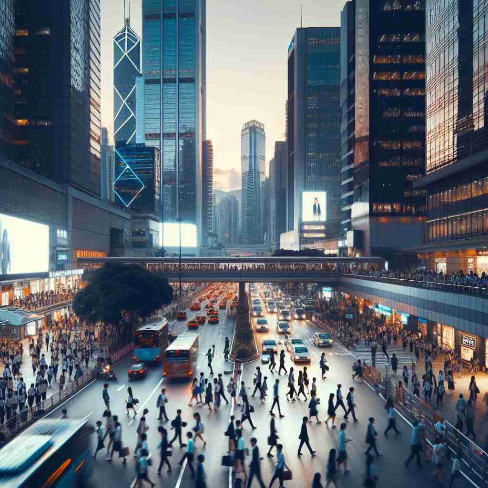

💬 The metropolitan area is full of busy streets and tall buildings. 大都市区域充满了繁忙的街道和高耸的建筑。

💬 The city is known for its vibrant metropolitan area filled with shops and restaurants. 这座城市以其充满商店和餐馆的活力四射的大都市区而闻名。
💬 The metropolitan area is full of busy streets and tall buildings. 大都市区域充满了繁忙的街道和高耸的建筑。
💬 The city is known for its vibrant metropolitan area filled with shops and restaurants. 这座城市以其充满商店和餐馆的活力四射的大都市区而闻名。
🧠 通过想象一个大城市的特征，你可以轻松理解'metropolitan'的各种含义。无论是描述城市本身、生活在城市中的人、城市的影响范围，还是城市生活带来的特质，都源于这个核心概念。将'metropolitan'视为一个围绕'大城市'展开的词语网络，可以帮助你更好地记忆和运用这个词。
🔈 [metrə'pɒlɪt(ə)n]
🗝️ adj. relating to or characteristic of a large city 与大城市相关或具有大城市特征的
🎭 傍晚时分，在一个充满活力的大城市，街道两旁霓虹灯闪烁，行人匆匆而过。高楼大厦的灯光在夜空中交相辉映，展示了'都市'独有的繁华与魅力。
💬 The metropolitan area includes the city and its surrounding suburbs. 大都市区域包括城市及其周边的郊区。
🌳 由词根 'metro-'（城市）和后缀 '-politan'（与城市相关的）组成，表示 '大都市的，首都的'。
💡 记忆 'metropolitan' 时，可以联想 'metro' 代表地铁和城市生活，'politan' 则与城市相关，通过结合这两个部分，容易记住这个词与大城市有关。
🗝️ n. a person who lives in a large city 生活在大城市的人
🎭 在一个进阶都市生活研讨会上，Alex分享他的经验：每天早晨他乘地铁去上班，晚上与朋友在市中心的咖啡馆聊天。他典型地展现了作为'都市居民'的生活方式。
💬 As a metropolitan, she enjoys the fast-paced lifestyle of the city. 作为一名都市人，她喜欢城市快节奏的生活方式。
🤔 从形容词描述城市特征延伸到描述生活在城市中的人
🗝️ n. the head of an ecclesiastical province or one of the autonomous churches in Eastern Orthodox Christianity 东正教中教省的首领或某个自治教会的首领
🎭 在一个庄严的东正教堂礼拜仪式中，城市的大主教（Metropolitan）身穿华丽的圣衣，正带领会众进行祈祷，他的地位在整个教区中举足轻重。
💬 The metropolitan led the important religious ceremony. 大都市首领主持了这场重要的宗教仪式。
🤔 借用城市中心的概念，比喻教会体系中的中心人物
🗝️ adj. of or relating to a metropolis or its surrounding region 大都市或其周边地区的相关内容
🎭 驱车驶出大都市，远处的郊区仍旧展现出浓厚的'都市风情'，高楼逐渐稀疏但依旧充满现代化气息，都市的延伸触及每一个角落。
💬 The metropolitan railway connects the city center with outlying areas. 地铁铁路将市中心与周边地区连接起来。
🤔 扩展核心含义，包括大都市及其周边地区
🗝️ adj. having the sophistication associated with urban life 具有城市生活所带来的复杂性
🎭 在一个高档的城市画廊开幕式上，穿着时髦的人们品尝着精致的小点心，讨论着艺术作品。他们的仪态和对话展现出一种'都市优雅'的气质。
💬 Her metropolitan tastes were evident in her choice of fashion and cuisine. 她的都市品味在她的时尚和饮食选择中显而易见。
🤔 从城市特征引申到与城市生活相关的品质